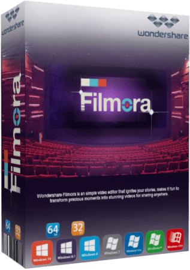

FYC://Wondershare Filmora X 10.0.0.94 (x64) Multilingual [FileCR]
=-=-=-=-=-=-=-=-=-=-=-=-=-=-=-=-=-=-=

Home
Download/Stream:
Torrent
Magnet
Play now (Stream)
Descption:

Video Editing Simplified - Ignite Your Story. A powerful and intuitive video editing experience. Filmora 10 is here with two new ways to edit: Action Cam Tool (Correct lens distortion, Clean up your audio, New speed controls) and Instant Cutter (Trim or merge clips quickly, Instant export).
Edit and Enhance Your Media Files
Easily make perfect movies using your video clips (SD, HD, camcorder, records), audio and photos. See tech spec. for all supported formats.
Edit and personalize videos/photos/audio with features like split, crop, trim, rotate, set fade in & fade out, adjust duration, etc.
Tune all up with Contrast, Saturation, Brightness and Hue tools.
One click to record videos and voiceovers with a webcam and microphone.
Speed up, Slow down and voice change effects make audio/video editing fun.
Manage all your media sources including videos (also webcam), audio, images and color slides.
Edit and Enhance Your Media Files
Take your movie to the next level instantly with 50+ ready-to-use filter effects.
Add transitions between clips and apply motion effects to photos to bring still images to life.
Easily achieve picture-in-picture (image/video overlay) tracks and customize with motion, effects and mask. New
Add stylish captions on your videos and photos with customizable font, color, etc. for better video meaning conveying.
Drag and drop Intro/Credit clips for a great film.
Share Your Videos with Family and Friends in a Snap
DEVICES: Get optimized videos for playback on your portable devices like iPhone, iPad, PSP, iPod, Wii, Zune, etc.
FORMATS: Save edited videos to local hard drive for further use in a variety of video formats.
ONLINE: Directly upload your video creation to YouTube, and share with more people on Facebook and Twitter.
TV: Burn videos to DVD discs to play with DVD player or save as DVD folder or ISO image files to preserve videos in a better way.
Supported Operation Systems:
OS: Windows 7, Windows 8, Windows 8.1, Windows 10 (64-bit).
Whats New:
Motion Tracking - Attach an element to a moving object in your video easily with auto motion tracking.
Keyframing - Customize animation by adding keyframes to change position, rotation, scale and opacity of a clip.
Color Match - Match the color of selected clips to another frame from another clip.
Audio Ducking - Quickly fade your music so your dialogue stands out
Keyboard Shortcuts Editor - Edit faster using hotkey commands.
New UI and switch dark/light mode - Switch between light and dark mode for all day editing comfort.
Plain Text - Added flexibility to editing using plain text.
Advanced Title Editing ( for Win only) - Change position, rotation and scale of a title (as a whole) on the player.
New Effects - 30 new elements and 9 callout titles.